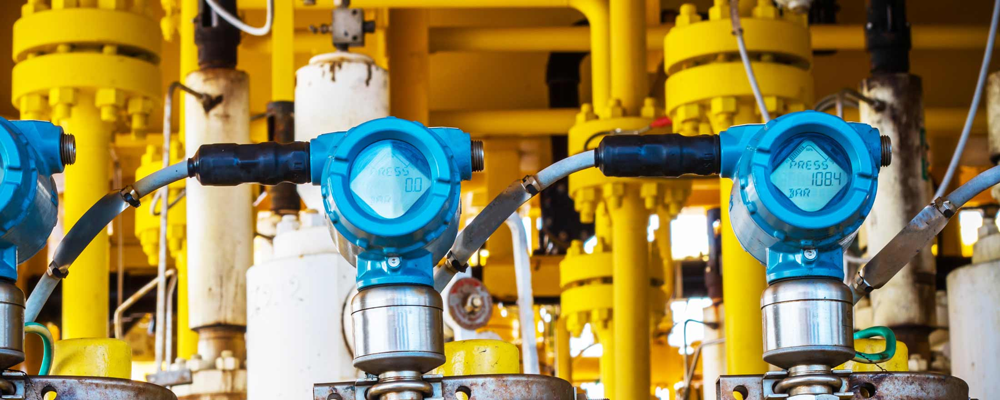
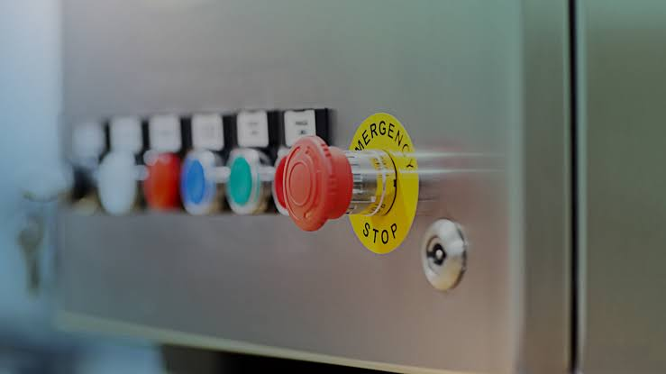
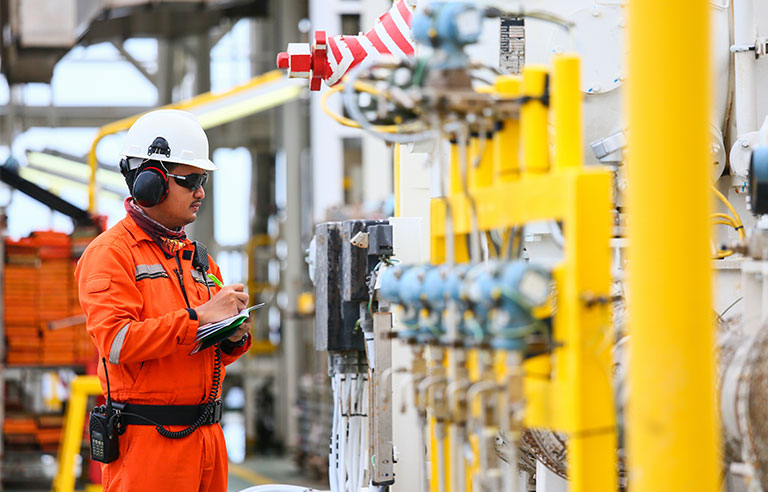
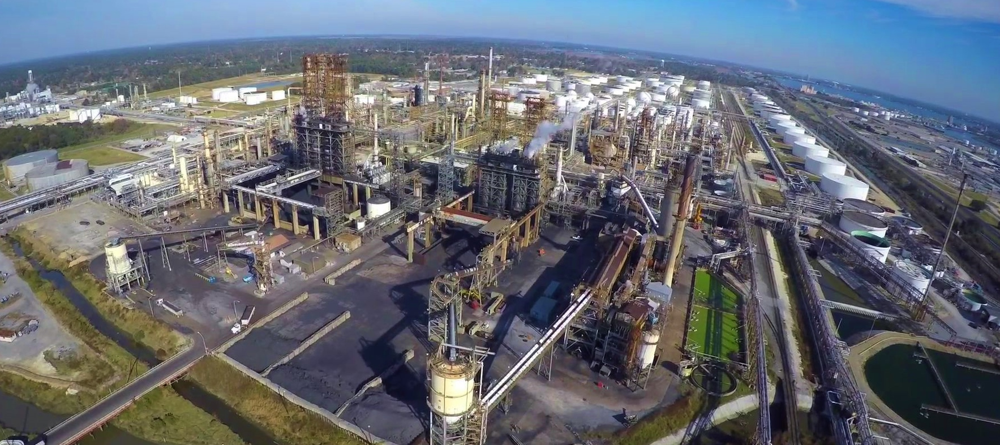
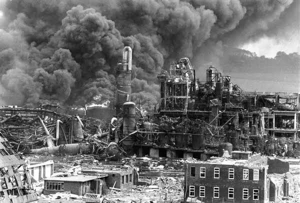
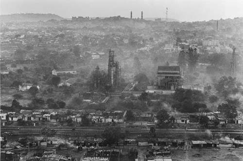
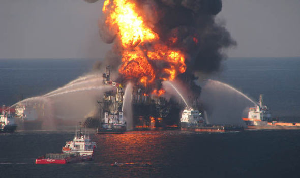

Process plants and manufacturing facilities can be one of the most dangerous places to work due to the high presence of risk, and therefore require many levels of protection to reduce these risks, to a tolerable level.
Every organization, not just process and manufacturing industries, have a moral and legal obligation to limit risk posed by their operations.
Process safety is of serious concern in process industries like: refineries, gas plants, LNG facilities and chemical plants. These facilities need to provide the necessary protection to protect both personnel and equipment to ensure that unplanned events don't result in life-threatening catastrophes. Safety is, and will always be of top priority in any industry because without life, there is no work.
With process safety/hazard analysis, engineers are empowered to reduce capital expenditure (CapEX), minimizing costs by achieving zero incidents, saving engineering time, avoiding costly over-design, all without compromising safety because in every industry, the industry leaders recognize the financial reward of utilizing properly designed process systems that optimizes reliabilty and safety.
Process Safety
Safety can be defined as actions taken in order to avoid danger, risks, or injuries. It is the condition of being protected from harm or any other event considered as undesirable.
Prevention they say, is the best safety measure. No matter how solid or effective process safety systems can be, it is always advised to seek ways to avoid the undesirable and unsafe situations totally.
Risks, Hazards, Near-miss and Accidents
An Unsafe Condition
- Risk: This can be defined as the likelihood of a defined consequence occurring within a known period of time and under specific conditions.
It can be calculated as the product of probability of harm, and severity of harm.
Risk (R) = Probability of harm (P) X Severity of harm (S) - Hazard: This can be defined as the characteristic of a process or system that represents a potential for an accident which can cause damage to people, property, or environment. In other words it is something likely to cause injury, damage, or loss.
- Accident:This is a specified unplanned event, or sequence of events that has harmful and undesirable consequences and results in damage, injury, or loss of life.
- Near miss: A “near-miss” is defined as an unplanned event that did not result in injury, illness or damage, but had the pottential to do so.
Functional Safety
Process operators observing a system
Functional safety is of great importance to the process industry, and it is an active form of safety. Functional safety involves keeping running processes under control, and keeping hazardous materials contained properly, reducing risk to a tolerable level.
Functional safety is a subset of process safety. Its principles ensures that each hazard is prevented or mitigated by equipment design with correct integrity. It ensures confidence that a piece of equipment will carry out its safety functionality when required to do so. For instance, ensuring that a running motor will shut down quickly enough to prevent harm to operators.
Industrial Safety Standards
Process operators in safety gears
Standards play a huge role in implementing best safety practices in process industries. Safety standards act as a global reference source for specifying, designing and maintaining safety instrumented systems.
Companies and organisations work globally to agree on best practices to be complied with and hence industries actively take steps to comply with these various national and worldwide standards.
Some of these organisations and bodies include:
- ISA - International Society of Automation
- IEC - International Electro-technical Commission
- OSHA - Occupational Safety and Health Administration
The ANSI /ISA 84 & IEC 61508/61511 Standards
The International Electro-technical Commission (IEC) developed IEC-61508 as standard for "Functional Safety of Electrical/ Electronic/ Programmable Electronic Safety-Related Systems". That is, it applies for all applications where electrical, electronic or programmable electronic safety-related systems are used to perform safety functions.
It provides design standards for Safety Instrumented Systems (SIS) to reduce process risks to a tolerable level by following proper procedures.
The IEC-61508 is like an umbrella standard because it applies to all industries. It is a standard that specifies the measures to be taken in the design of safety functions consisting of sesnsor, logic solvers and actuators and also risk assessment.
Some of these measures include: fault avoidance (systematic faults) and fault control ( systematic and random faults)
The IEC-61511 is a functional safety standard for Safety Instrumented Systems in process industries. It is like an implementation of IEC-61508, but for process industries.
The IEC-61508 and IEC-61511 are standards relevant in the process industry to the specification, design, and operations of safety systems . These are collectively created standards which when coupled with protective measures, reduce risk level in processes to an acceptable/ tolerable level.
These standards address the entire safety lifecycle and are the basis for specification, design and operation of safety-related systems (SRS).
SRS are used to secure a hazardous process and reduce the risk of an accident
The ANSI/ISA 84 standard was also developed by ISA84 for applications of Safety Instrumented Systems (SIS) for process industries. It follows the IEC-61511 standard, and it defines all phases required in Safety Life Cycle.
ISA in the US, and IEC in Europe merged to create one functional safety standard called the ISA 84/IEC-61511 for Safety systems in process industries. Which can be summarised as implementing separate well designed safety instrumented systems, in order to reduce functional risks.
For achieving functional safety integrity, IEC series of standards, recommend the use of the basic principle of Independence in protection layers. Where the safety devices and systems are powered and run separate from the basic process control systems (BPCS), making them fully independent layers of protection.
Process Safety Systems
 Process operators in process plant
Process operators in process plant
Getting safety system specifications correctly is a key factor in reducing unwanted accidents. Process safety equipment have to be properly sized, because wrong sizing of process safety equipment and poor design can result in accidents and significant increase in capital expenditure (CapEX).
In designing and rating process safety equipment such as pressure release valves, flare systems etc. these systems need to protect a wide variety of equipment types and process configurations.
There are various layers of protection in process safety systems and the first protection layers of the process system occur in:
- Process Design: here care is taken to specify equipment with the right materials for construction, sizes and right accessories.
- Basic Process Control Systems (BPCS): this is installing processes with the right instruments, controllers, and monitoring logic to allow for safe operations.
- Alarms and Operator Intervention: Alarms are configured to allow operators to react to abnormal conditions and take corrective actions before they turn into accidents.
But this first layer alone won't reduce most risks in hazardous plants to a tolerable level. Risks associated with various processes have to be properly well defined and appropriate controls have to be put in place to minimise these risks.
Safety Instrumented Systems (SIS)
 A Process system
Safety instrumented system (SIS) is a system that provides an independent and predetermined emergency shutdown path, in case a process runs out of control. It is an instrumented system used to implement one of more Safety Instrumented Functions (SIF) to detect out-of-control conditions, and automatically return the process to a safe state.
SIS are an engineered set of hardware and software controls which are especially used on critical process systems. They are most often used for processes in refineries, chemical plants, nuclear plants etc. It consists of three major components: the initiators or sensors, the Logic solvers, and final control elements with a purpose of taking a process to safe state when predetermined conditions are violated. It is usually made up of a separate set of devices from the basic process control systems (BPCS) and shouldn't be interlinked with them.
SIS represents an additional layer of protection above the first three layers of process safety system. Its function is to take a given process to a safe state when predetermined conditions are violated.
An SIS functional test has to be frequently carried out and the functional test form has to be confirmed after a successful test and signed by designated supervising authorities. If a problem is spotted, the team in charge has to fix the issue and repeat the test again.
The procedure for SIS functional testing include:
1. Simulating and testing the ESD (Emergency Shutdown System.
2. Verifying the valve positions and other process equipment from the field.
3. Finalizing the functional test form.
Some examples of Safety Instrumented Systems are:
- ESD (Emergency Shutdown) or PSD (Process Shutdown) systems.
- ICSS (Integrated Control and Safety Systems).
- F&G (Fire and Gas) protection systems
- HIPP (High Integrity Pressure Protection) system
Safety Instrumented Functions (SIF)
SIF is defined as a function to be implemented by a safety instrumented systems (SIS) which is intended to automatically achieve or maintain a safe state for a given process with respect to specific hazard of events.
It is an independent safety loop or interlock that automatically brings processes to safe state in respect to specific initiating events. This safety function contains inputs (sensors), logic and output sub-systems. When an unsafe state is sensed by the input, the logic system makes a decision on the sensed values and if it is deemed potentially hazardous, the output systems are instructed to take the system to a defined safe state.
Some examples of SIF applications include:
- Initiating release of a fire suppressant
- Closing a feed valve to prevent a tank overflow
- Opening of a valve to relieve excess pressure
- Shutting down fuel supply to a furnace
- On/ Off control to prevent undesired operations
Emergency Shutdown Systems (ESD)
 An Emergency shutdown system with an emergency stop button
This is the technique used in almost every control system in process and manufacturing industries all around the world. Emergency shutdown system is a bit more than just an emergency stop device. The major difference between an emergency stop and an emergency shutdown system, is the ability of the ESD to detect potentially hazardous conditions and react to it by shutting down the system to protect personal assets and facilities and even the environment.
ESDs are safety system designed to minimise the consequences of emergency situations such as system failures, to reduce accidents like flooding, outbreak of fire escape of hazardous material etc. It is usually operated by continuous monitoring of field mounted sensors, valves, trip relays and other protective devices.
The ESD will most times not shut down the entire plant completely, as this could result in a catastrophic situation. What it does instead, is to minimise the effects of the occurrence by shutting down parts of the system that are of significant interest. When critical problems are to occur, it is crucial that the system reacts quickly to problems or better still, detect it before the situation even becomes a problem.
ESDs can detect potential failures based upon data from field sensors, valves, trip relays and react much quicker than human operators, stopping small problems from becoming catastrophes. The usually have their own special logic controllers asides from the normal process controller, to enable quicker reactions to process situations because even a millisecond can be the difference between a problem and a catastrophic failure.
Safety Integrated Levels (SIL)
 An Operator observing process systems
Safety systems use a classification based on risk and probability, called Safety Integrated Levels (SIL) as a means to express the required risk reduction needed to reduce the risk in a given process, to a tolerable level. SIL is used to define the reliability of safety instrumented functions (SIF).
To determine a SIL, a team in charge of safety practices through a Process Hazard Analysis (PHA), identifies all process hazards, estimates their risks and decides whether or not that risk is tolerable. Once a SIL has been assigned to a process, the trained safety personnel has to verify that individual safety components in the process working together to implement the Safety Instrumented Function (SIF), are all in compliance with the constraints of the required SIL.
There are four (4) main SIL levels,
with an order of magnitude increase in safety as you go from one level to the next.
- SIL 1: this involves integrity required to avoid minor incidents and are easily satisfied by some fault-tolerance design, using guidelines that follow good practices.
- SIL 2: this represents the integrity to avoid more serious but limited incidents, which may result in injuries or even death to one or more personals.
- SIL 3: this is a represents integrity required to avoid serious incidents involving numerous fatalities and serious injuries.
- SIL 4: this represents the integrity level required to avoid massive disastrous accidents. Usually reserved for applications like nuclear plants, where thousands of people are likely to get hurt.
When designing safety systems, the required level and associated risk is taken into account by using what is called a safety or risk Matrix which looks at each of the risk and attaches a probability and consequence to them to get the required safety integrated level required for the safety system.
Every alarm on the system is assigned a rating based upon its probability to occur and the consequences if it does. The higher the potential consequences, the higher the integrity rating and complexity of the safety system required for it. That is, as SIL level increases, the cost and complexity of the system also increases.
The IEC 61508 standard, has become the benchmark used by various safety equipment suppliers to show that their equipment is suitable for use in Safety Integrated Level (SIL) rated systems.
Probability of Failure on Demand (PFD)
Probability of failure on demand (PFD) is the probability that a device’s input, output or logic solver will fail, and causing the safety instrumented function to no longer respond. These values can be obtained from the vendor’s data of the specific devices.
It is a measure of the effectiveness of a safety function, and it expresses the likelihood that the safety function does not work when required to.
Risk Reduction Factor (RRF)
Risk reduction factor can also be used to indicate the probability of failure for an instrumented function when the SIL mode is low demand. The risk reduction factor is the inverse of the required probability of failure. For example, a required probability of failure value of 0.001 would equal a risk reduction factor of 1,000, meaning that the instrumented function would fail during a dangerous scenario about once every 1,000 years.
This provides at least a 10-fold increase in the risk of the operation. And it is the inverse of PFD.
RRF = 10 or greater than 10.
Risk Matrix
In designing safety instrumented systems, the safety design team must always carry out proper risk analysis identifying all of the potential risks. Risk Matrix are used to identify the level of risk that are tolerable in the process, and which point require SIS to be defined. It is done quantitatively and qualitatively by assigning numerical values to the expected frequency/ probability and severity of the risk.
When designing a safety instrumented system for a safety instrumented function (SIF), we need to determine the overall PFD for each required function. This PFD values determines what SIL level should be assigned.
For example if the PFD value is equals to 0.1, then the system has to be designed to a SIL 1. If PFD value happens to be 0.01, then the system has to be designed to a SIL 2 and so on till SIL 4 for PFD values or 0.0001.
Hazard and Operability Studies
( HAZOPS)

A Process plant
HAZOPS originated in the UK in the 60’s to examine risks of failures. HAZOP is a technique which critically examines a process part by part, in a very structured and systematic manner in order to identify and evaluate problems that may be of risks to personnel and assets. It is usually carried out by a multi-disciplinary HAZOP team.
After several major industrial accidents, it became necessary to look for better ways to design facilities and understand risks. HAZOP is a process to identify and assess risks and hazards.
Some notable industrial accidents that have occurred in history are:
- Flixborough, England – June 1974

Flixborough chemical plant 1974
The Flixborough disaster was an explosion at a chemical plant close to the village of Flixborough, North Lincolnshire, England on Saturday, 1 June 1974. It killed 28 people and seriously injured 36 out of a total of 72 people on site at the time.
You can read more about the Incident here ☞ Click here for more Details
The disaster was said to have been caused by a hasty modification. There was no on-site senior manager with mechanical engineering expertise because majority of the plant management had just chemical engineering qualifications; so some mechanical engineering issues with the modification were overlooked by the managers who approved it.
Flixborough led to a widespread public outcry over process safety. Together with the passage of the UK Health and Safety at Work Act in the same year, it led to a more systematic approach to process safety in UK process industries. - Bhopal, India - December 1984

bhopal india 1984 after the gas leak
known as the "Bhopal gas tragedy", considered as one of the world’s worst industrial disaster that killed over 2,000 people in just a few hours.
It was a gas leak incident on the night of 2–3 December 1984 at the Union Carbide India Limited (UCIL) pesticide plant in Bhopal, Madhya Pradesh, India. Over 500,000 people were exposed to methyl isocyanate (MIC) gas. The highly toxic substance made its way into and around the small towns located near the plant.
You can read more about the Incident here ☞ Click here for more Details - Piper Alpha - July 1988

The Pipa Alpha Explosion
An explosion at an oil production platform in the North Sea, north east of Aberdeen, Scotland.
An explosion and resulting oil and gas fires destroyed Piper Alpha on 6 July 1988, killing 167 people, including two crewmen of a rescue vessel; 61 workers escaped and survived. Thirty bodies were never recovered. The total insured loss was about £1.7 billion ($3.4 billion), making it one of the costliest man-made catastrophes ever. At the time of the disaster, the platform accounted for approximately ten percent of North Sea oil and gas production, and the accident is the worst offshore oil disaster in terms of lives lost and industry impact.
You can read more about the Incident here ☞ Click here for more Details - BP Gulf of Mexico - April 2010
 The Deep Water Horizion Explosion
The Deep Water Horizion Explosion
The Deepwater Horizon drilling rig explosion that claimed the lives of 11 people, and injuring over 17 people.
The BP oil spill (also referred to as the Deepwater Horizon oil spill , oil leak, or oil disaster; the Gulf of Mexico oil spill; and the Macondo blowout) is an industrial disaster that began on 20 April 2010, in the Gulf of Mexico on the BP-operated Macondo Prospect, considered to be the largest marine oil spill in the history of the petroleum industry and estimated to be 8% to 31% larger in volume than the previous largest, the Ixtoc I oil spill, also in the Gulf of Mexico. The U.S. Federal Government estimated the total discharge at 4.9 million barrels (210 million US gal; 780,000 m3).
After several failed efforts to contain the flow, the well was declared sealed on 19 September 2010.[10] Reports in early 2012 indicated that the well site was still leaking.The Deepwater Horizon oil spill is regarded as one of the largest environmental disasters in American history.
You can read more about the Incident here ☞ Click here for more Details
Looking through these major industrial disasters we can see that if proper HAZOPS were carried out, most of these historical events might have been prevented from happening.
Steps Taken in HAZOPS
- Identify risks by seeking to know the various causes of hazardous events.
- Describe the consequences and assign a severity level to them.
- Assess the probability of the cause.
- Evaluate the risk, based on this severity and probability without safeguards in place.
- Assess the risks with safeguards put in place.
- Make a decision to accept the risk or make a recommendation to further reduce the risks.